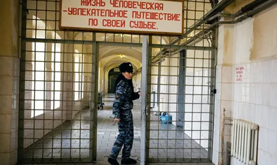
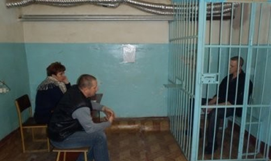

Общая характеристика преступлений против общественной безопасности
Преступления против общественной безопасности регулируются главой 24 УК РФ.
Родовой объект данной категории преступлений – совокупность общественных отношений, складывающихся в процессе обеспечения безопасных условий существования и деятельности общества, его граждан и отдельных институтов. Видовыми объектами могут выступать группы общественных отношений, направленные на обеспечение безопасного функционирования той или иной сферы социальной жизни – безопасность в общественных местах, радиационная безопасность, информационная безопасность и др. В некоторых составах присутствуют дополнительные объекты: например, бандитизм (ст. 209 УК) подразумевает посягательство на общественную безопасность (основной субъект) и на здоровье личности и отношения собственности (дополнительные субъекты).
С объективной стороны большинство преступлений данной категории совершается путем активных действий, но в некоторых составах возможно и бездействие (например, нарушение правил пожарной безопасности — ст. 219 УК). По конструкции составы в большинстве своем формальные, но отдельные — материальные (например, нарушение правил безопасности при ведении горных, строительных и иных работ — ст. 216 УК; нарушение правил пожарной безопасности — ст. 219 УК).
С субъективной стороны большая группа преступлений характеризуется умышленной виной, некоторые совершаются по неосторожности (например, нарушение правил безопасности при ведении строительных или иных работ деяния).
Субъекты данной категории преступлений – физические вменяемые лица, достигшие либо 14 лет (при терроризме, захвате заложника, заведомо ложном сообщении об акте терроризма, хулиганстве при отягчающих обстоятельствах, вандализме, хищении либо вымогательстве оружия, боеприпасов, взрывчатых веществ и взрывных устройств), либо 16 лет (остальные виды посягательств). В отдельных составах присутствуют специальные субъекты: например, ненадлежащее исполнение обязанностей по охране оружия, боеприпасов, взрывчатых веществ и взрывных устройств (ст. 225) наказуемо только для лиц, которым вверена такая охрана.
Классификация преступлений против общественной безопасности может быть представлена следующим образом:
а) преступления против всеобщей безопасности – ст. 205, 205.1., 205.2., 205.3., 205.4., 205.5., 205.6., 206, 207, 207.1., 207.2., 207.3., 208, 209, 210, 210.1., 211, 212, 212.1., 227 УК;
б) преступления против общественного порядка – ст. 213, 214 УК;
в) преступления, связанные с нарушением правил безопасности при производстве специальных работ – ст. 215, 215.1., 215.2., 215.3., 215.4., 216, 217, 217.1., 217.2., 219 УК;
г) преступления, связанные с нарушением правил обращения с общеопасными предметами – ст. 218, 220, 221, 222, 223, 224, 225, 226, 226.1. УК.
Преступления против всеобщей безопасности
1) Ст. 205 – террористический акт. Объективная сторона конкретизирует, что считать террористическим актом: совершение взрывов, поджогов или иных действий, создающих опасность гибели людей, причинения значительного имущественного ущерба либо наступления иных общественно опасных последствий; угроза совершения вышеперечисленных действий (действительная и реальная, например, при наличии у лица реальной возможности совершения террористического акта – взрывчатки, оружия и т.п.).
Субъективная сторона преступления характеризуется виной в виде прямого умысла. Субъект преступления — физическое вменяемое лицо, достигшее 14 лет. Квалифицирующими признаками являются: совершение теракта группой лиц по предварительному сговору; причинение смерти, значительного имущественного ущерба либо наступление иных тяжких последствий; посягательство на объекты использования атомной энергии либо использование ядерных материалов, радиоактивных веществ или источников радиоактивного излучения либо ядовитых, отравляющих, токсичных, опасных химических или биологических веществ.
Лицо, участвовавшее в подготовке теракта, освобождается от уголовной ответственности, если оно своевременным предупреждением органов власти или иным способом способствовало предотвращению осуществления террористического акта.
Отдельными статьями урегулированы родственные составы преступлений: содействие террористической деятельности (склонение, вербовка или иное вовлечение лица в совершение теракта – ст. 205.1.), публичные призывы к осуществлению террористической деятельности, публичное оправдание терроризма или пропаганда терроризма (ст. 205.2.), прохождение обучения в целях осуществления террористической деятельности (ст. 205.3.), организация террористического сообщества и участие в нем (ст. 205.4.) и организация деятельности террористической организации и участие в деятельности такой организации (ст. 205.5.).
2) Ст. 205.6. – несообщение о преступлении. Наказуемо при наличии у виновного сведений о лице (лицах), которое готовит, совершает или совершило преступления, предусмотренные статьями 205, 205.1, 205.2, 205.3, 205.4, 205.5, 206, 208, 211, 220, 221, 277, 278, 279, 360 и 361 УК, и не сообщил об этом в органы власти.
3) Ст. 206 – захват заложника. Объективная сторона выражается в захвате либо в удержании лица в качестве заложника. Захват и удержание заложника обычно сопровождаются применением физического или психического насилия.
С субъективной стороны преступление характеризуется виной в виде прямого умысла. Для квалификации преступления важна цель удержания – понуждение государства, организации или гражданина совершить какое-либо действие или воздержаться от совершения какого-либо действия как условие освобождения заложника.
Субъект преступления — физическое вменяемое лицо, достигшее 14 лет. Указаны квалифицированные виды захвата заложника: совершение его группой лиц по предварительному сговору; с применением насилия, опасного для жизни или здоровья; с применением оружия или предметов, используемых в качестве оружия; в отношении заведомо несовершеннолетнего; в отношении женщины, заведомо для виновного находящейся в состоянии беременности; в отношении двух или более лиц; из корыстных побуждений или по найму; причинение смерти заложнику.
4) Сообщение или публичное распространение заведомо ложной информации:
- ст. 207 – заведомо ложное сообщение об акте терроризма (из хулиганских побуждений; совершенное в отношении объектов социальной инфраструктуры либо повлекшее причинение крупного ущерба; в целях дестабилизации деятельности органов власти; повлекшие по неосторожности смерть человека или иные тяжкие последствия). Если лицо, добросовестно заблуждаясь, не осознавало ложности своего заявления, ответственность по ст. 207 УК исключается;
- ст. 207.1. – публичное распространение заведомо ложной информации об обстоятельствах, представляющих угрозу жизни и безопасности граждан (чрезвычайных ситуациях природного и техногенного характера, чрезвычайных экологических ситуаций и т.п.);
- ст. 207.2. – публичное распространение заведомо ложной общественно значимой информации, повлекшее тяжкие последствия;
- ст. 207.3. – публичное распространение заведомо ложной информации об использовании Вооруженных Сил Российской Федерации, исполнении государственными органами Российской Федерации своих полномочий;
5) ст. 208 – организация незаконного вооруженного формирования или участие в нем, а равно участие в вооруженном конфликте или военных действиях в целях, противоречащих интересам Российской Федерации;
6) организованная преступность:
- ст. 209 – бандитизм. Объективная сторона бандитизма выражается в создании устойчивой вооруженной группы (банды) в целях нападения на граждан или организации; руководстве такой группой; участии в банде или в совершаемых бандой нападениях.
Под бандой понимается организованная устойчивая вооруженная группа из двух или более лиц, заранее объединившихся для совершения нападений на граждан или организации.
Банда должна включать не менее двух членов, иметь устойчивый (стабильный) характер, иметь целью вооруженные нападения на граждан или организации. Субъективная сторона бандитизма характеризуется прямым умыслом и специальной целью — совершение нападений на граждан и организации. Субъект преступления — физическое вменяемое лицо, достигшее 16 лет. Участник банды, не достигший 16 лет, несет ответственность за конкретные совершенные им преступления, ответственность за которые наступает с 14 лет: убийство, изнасилование, разбой и т.д.;
- ст. 210 – организация преступного сообщества (преступной организации) или участие в нем (ней). Данное деяние близко к бандитизму, но отличается от него следующими признаками: банда характеризуется признаком устойчивости, а преступное сообщество — признаком сплоченности; для преступного сообщества не обязателен признак вооруженности; преступное сообщество создается в целях совершения только тяжких и особо тяжких преступлений, для бандитизма подобного ограничения для круга нападений закон не устанавливает;
- ст. 210.1. – занятие высшего положения в преступной иерархии.
7) Неправомерное завладение воздушным, морским, речным, железнодорожным транспортом:
- ст. 211 – угон судна воздушного или водного транспорта либо железнодорожного подвижного состава. Захват представляет собой противоправное завладение судном воздушного или водного транспорта либо подвижным железнодорожным составом для дальнейшего использования его в качестве средства передвижения. Способами захвата могут выступать применение насилия, угроза применить насилие, обман, злоупотребление доверием. Субъективная сторона преступления характеризуется виной в виде прямого умысла. Субъект преступления — физическое вменяемое лицо, достигшее 16 лет;
- ст. 227 – пиратство (нападение на морское или речное судно, совершаемое с применением насилия либо с угрозой его применения). От статьи 211 данный состав отличают следующие признаки: объект нападения (пиратство распространяется только на морские и речные суда); цель нападения (завладение имуществом, а не дальнейшее передвижение). Нападение должно сочетаться с применением насилия или угрозой его применения, которые могут быть обращены как на членов экипажа, обслуживающий персонал, так и на пассажиров. Субъективная сторона пиратства характеризуется виной в виде прямого умысла и целью завладения чужим имуществом. Субъект преступления — физическое вменяемое лицо, достигшее 16 лет.
8) Ст. 212 – массовые беспорядки. Объективная сторона преступления состоит в организации массовых беспорядков; в участии в массовых беспорядках; в призывах к массовым беспорядкам, а равно к насилию над гражданами. Массовые беспорядки — это общественно опасные действия организованной толпы, сопряженные с применением насилия, погромами, поджогами, уничтожением имущества, применением огнестрельного оружия, взрывчатых веществ и взрывных устройств, а также оказанием вооруженного сопротивления представителям власти. С субъективной стороны преступление характеризуется прямым умыслом. Субъект преступления — физическое вменяемое лицо, достигшее 16 лет.
9) Ст. 212.1. – неоднократное нарушение установленного порядка организации либо проведения собрания, митинга, демонстрации, шествия или пикетирования.
Преступления против общественного порядка
1) Ст. 213 – хулиганство. Объективная сторона хулиганства выражается в совершении активных действий, отличающихся следующими признаками: а) грубым нарушением общественного порядка (наносящим общественному порядку существенный серьезный вред, создающим угрозу нормальной деятельности предприятий, учреждений, организаций, здоровью людей, нравственности); б) проявлением явного неуважение виновного к обществу (демонстративным пренебрежением к общепринятым правилам поведения, нормам морали и нравственности); в) применением насилия или угрозой его применения, либо уничтожением или повреждением чужого имущества; г) совершением деяния на железнодорожном, морском, внутреннем водном или воздушном транспорте, а также на любом ином транспорте общего пользования. Субъективная сторона преступления характеризуется виной в виде прямого умысла и так называемым хулиганским мотивом, т.е. стремлением виновного противопоставить себя обществу, выказать ему свое неуважение и пренебрежение нормами человеческого общежития, нравственности, морали, а также мотивом политической, идеологической, расовой, национальной или религиозной ненависти или вражды либо мотивом ненависти или вражды в отношении какой-либо социальной группы. Субъект простого хулиганства — физическое вменяемое лицо, достигшее 16 лет, а квалифицированного и особо квалифицированного — лицо, достигшее 14 лет. Квалифицирующими признаками являются: совершение деяния с применением оружия или предметов, используемых в качестве оружия; группой лиц; с сопротивлением представителю власти либо иному лицу, исполняющему обязанности по охране общественного порядка или пресекающему нарушение общественного порядка; с применением взрывчатых веществ или взрывных устройств.
2) Ст. 214 – вандализм (осквернение зданий или иных сооружений, порчу имущества на общественном транспорте или в иных общественных местах). Мотив при совершении вандализма чаще всего хулиганский, но может быть и иным, например, месть, пренебрежение к нормам общественного поведения и др. По степени нарушения общественного порядка вандализм менее общественно опасен, чем хулиганство, так как не сопровождается применением насилия, угрозой его применения, а также уничтожением или повреждением чужого имущества, влекущим обязательно причинение значительного ущерба потерпевшему. Квалифицирующим признаком вандализма может случить его совершение группой лиц, а равно по мотивам политической, идеологической, расовой, национальной или религиозной ненависти или вражды либо по мотивам ненависти или вражды в отношении какой-либо социальной группы.